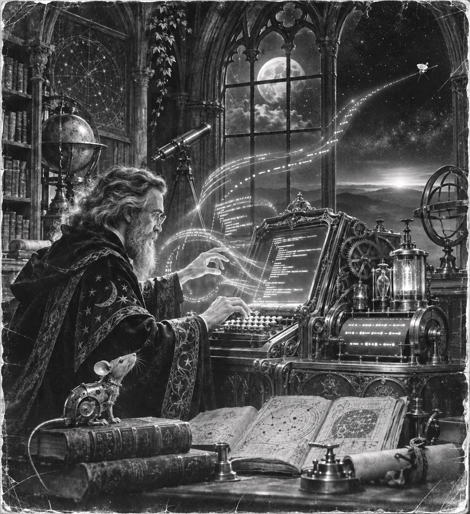

Morning Edition
6:00 AM CSTFinance & Markets
AI Shares Rebound, but Global Markets Stay Mixed
World shares were mixed Wednesday as chipmakers recovered from Wall Street’s latest AI-led selloff. South Korea’s Kospi rose 1.9% with SK Hynix and Samsung climbing, while investors digested a 848-point drop in the Dow and Nvidia results that again beat expectations—the market is still deciding how much confidence to compile into the AI buildout.
Source: Associated Press, November 18, 2026Blackstone Takes 75% Stakes in AWS Infrastructure Ventures
Blackstone Digital Infrastructure Trust agreed to acquire 75% stakes in two joint ventures with Amazon Web Services in a transaction valued around $5 billion. The deal puts another large pool of private capital behind the physical layer of cloud and AI demand, where power, land and patient financing matter as much as software.
Source: Axios Pro Rata, November 17, 2026World & US
Iran Widens Gulf Attacks to Kuwait and Bahrain
Iran targeted a U.S. air base in Kuwait and launched several attacks on Bahrain Wednesday, widening its campaign after American strikes the day before. The escalation adds new risk across the Gulf while diplomats and energy markets watch the region’s strategic bases and shipping routes.
Source: Associated Press, November 18, 2026Trump and Xi Meet as U.S.-China Competition Deepens
President Trump and Chinese leader Xi Jinping begin meetings in Shenzhen around the APEC summit, their third encounter this year. Trade, technology, rare-earth supply and AI talent sit beneath the diplomacy as the world’s two largest economies compete without fully disconnecting.
Source: Associated Press, November 18, 2026White House Withdraws Its FDA Nominee
The White House pulled Heidi Overton’s nomination to lead the Food and Drug Administration after support wavered among Senate Republicans. The reversal leaves the administration searching again for permanent leadership at the agency responsible for medicines, vaccines and much of the nation’s food supply.
Source: Associated Press, November 18, 2026Congress Questions a $50 Billion Air-System Upgrade
Transportation Secretary Sean Duffy asked Congress for $50 billion to modernize U.S. air-traffic infrastructure after a nationwide ground stop exposed brittle systems. Lawmakers pressed the administration on cost, accountability and whether airlines should share more of the bill.
Source: Associated Press, November 17, 2026
The Light-Day Spell: send one clear signal farther than yesterday’s imagination could reach.
“A clear signal can cross an impossible distance, one deliberate pulse at a time.”— The Developer’s Almanac
Sagittarius Developer Horoscope
Justin, the Pisces Moon’s link with Mercury makes the first quiet signal especially valuable: trust the idea that arrives before the notifications do. The Scorpio Sun and Jupiter favor mindful ambition, while Mars and Chiron ask Sagittarius to prove readiness with one brave follow-through tonight. Your Year-of-the-Rat ingenuity can decode the hidden route, but today’s magic is transmission—write the thought down, shape it into a small working artifact, and send it into the world. Your lucky command is listen --deep && build --signal && ship --brave. Today’s rule: intuition becomes engineering when it leaves a trace.
Tech, AI, Space & Crypto
-
Nvidia Posts $115.8 Billion Quarter
Nvidia reported fiscal third-quarter revenue of $115.8 billion, up 20% from the previous quarter and 103% from a year earlier. The results and outlook strengthened the case that demand for AI infrastructure remains formidable even as markets question valuations and leadership risk.
Source: Nvidia investor filing, November 17, 2026 -
Voyager 1 Reaches One Light-Day From Earth
Voyager 1 crosses a singular milestone Wednesday: more than 16 billion miles from Earth, far enough that light itself takes 24 hours to reach humanity’s most distant machine. Nearly 50 years after launch, the probe remains a lesson in durable systems, patient operations and signals worth waiting for.
Source: NASA Jet Propulsion Laboratory, November 17, 2026 -
Dragon Brings Space-Station Science Home
A SpaceX Dragon is scheduled to undock from the International Space Station Wednesday with scientific samples and hardware for return to Earth. The mission turns orbiting experiments into physical data scientists can study on the ground—the final merge in a very long deployment pipeline.
Source: NASA, November 17, 2026 -
Bitcoin Stays Below $65,000 Before Fed Minutes
Bitcoin traded around $64,673 early Wednesday after six straight weeks of losses. Higher-rate expectations, tech-sector jitters and concern about speculative assets kept the market subdued even as AI-linked equities found a tentative rebound.
Source: Investing.com/Reuters, November 18, 2026
Morning Compile
- Markets: chip shares rebound after Nvidia’s beat, but global indexes remain mixed.
- Private capital: Blackstone takes 75% stakes in two AWS infrastructure ventures valued around $5 billion.
- World: Iran widens Gulf attacks while Trump and Xi meet in Shenzhen.
- US: the White House withdraws its FDA nominee and Congress questions a $50 billion air-system overhaul.
- AI: Nvidia’s $115.8 billion quarter says infrastructure demand is still transmitting loudly.
- Space: Voyager 1 reaches one light-day from Earth as Dragon carries station science home.
- Crypto: bitcoin holds near $64,700 before Fed minutes.
- Today’s spell: listen for the clean signal, build it into form, and send it farther than fear.